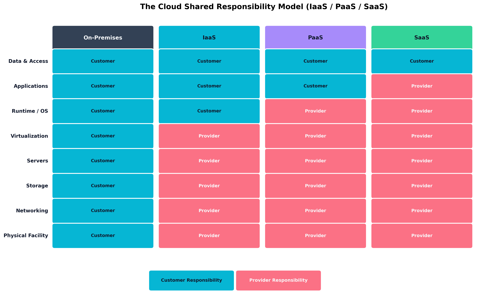
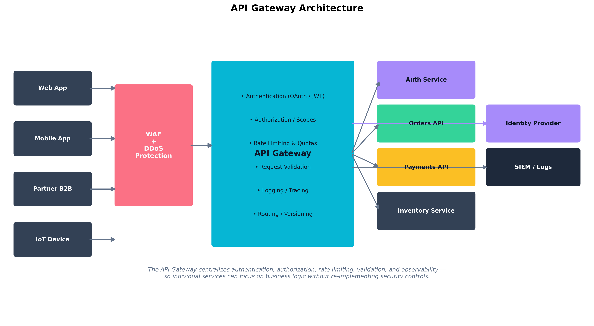

Chapter 7: Enterprise Cloud and Hybrid Security
Aligned SecurityX Objectives:
- 1.3: Explain how compliance affects information security strategies.
- 2.5: Given a scenario, securely implement cloud capabilities in an enterprise environment.
Cloze Problem Set: Dorothy Gale Secures the Emerald City Cloud
Learning Outcomes:
- Design secure cloud architectures utilizing Cloud Access Security Brokers (CASBs).
- Apply the shared responsibility model to cloud infrastructure security.
- Implement container security and orchestration controls in cloud environments.
- Architect secure serverless workloads, functions, and resources.
- Design API security mechanisms including authorization, logging, and rate limiting.
- Evaluate cloud data security considerations, including exposure, leakage, and data remanence.
- Formulate customer-to-cloud connectivity strategies for hybrid infrastructures.
- Implement proactive, detective, and preventative cloud control strategies.
- Integrate government and industry-specific compliance requirements (e.g., FedRAMP) into cloud architectures.
Introduction
A decade ago, “the cloud” was still something experienced engineers argued about over coffee. Was it really more secure than a well-run data center? Could a regulated bank realistically put customer records on someone else’s servers? Was a multi-tenant environment with shared hardware ever going to be acceptable for sensitive workloads?
Those debates have largely ended — not because anyone won them on principle, but because the economics, scale, and operational maturity of public cloud platforms became impossible to ignore. The modern enterprise does not choose between cloud and on-premises in the way it once did. It runs hybrid: a mix of on-premises systems, public cloud, software-as-a-service applications, and a tangled web of integrations between all three. Each piece has its own threat model, its own controls, and its own division of responsibility between the customer and the provider.
This chapter is about navigating that complexity competently. We start with the foundational question of who is responsible for what in a cloud deployment — a question that, when answered wrong, has produced some of the most consequential breaches in recent history. We then examine the workloads themselves: containers, serverless functions, and the orchestration platforms that run them. From there, we look at how secure delivery pipelines extend into the cloud, how APIs and access brokers govern the boundary between users and services, and finally how cloud data is protected throughout its lifecycle — from creation to remanence.
Who is Responsible for Cloud Security?
The most common, most preventable, and most consequential cloud security failures all share a single root cause: a customer assumed the cloud provider was handling something the cloud provider was not handling. To avoid joining that list, the first concept any cloud architect must internalize is the shared responsibility model.
The Shared Responsibility Model
The shared responsibility model is a contractual and operational framework that defines which security obligations belong to the cloud provider and which belong to the customer. Every major cloud provider — AWS, Microsoft Azure, Google Cloud Platform, Oracle Cloud, IBM Cloud — publishes its own version of this model. The wording varies, but the underlying logic is consistent: the provider secures the infrastructure that delivers the cloud service, and the customer secures everything they put on top of it.
What “everything they put on top of it” means depends entirely on the service model:
Infrastructure as a Service (IaaS) — The customer rents virtual machines, virtual networks, and storage. The provider handles the physical data center, the host hardware, the hypervisor, and the network fabric. The customer handles the guest operating system, all software running on it, the data, identity and access controls, and network configuration. AWS EC2, Azure Virtual Machines, and Google Compute Engine are IaaS examples.
Platform as a Service (PaaS) — The customer deploys application code or containers onto a platform that the provider operates. The provider handles the OS, runtime, and patching of the underlying platform. The customer is responsible for application code, application configuration, data, and the identity layer. AWS Elastic Beanstalk, Azure App Service, and Google App Engine are PaaS examples.
Software as a Service (SaaS) — The customer consumes a complete application. The provider handles essentially everything except the customer’s data, the customer’s user accounts, and the customer’s configuration of the SaaS itself. Salesforce, Microsoft 365, and Google Workspace are SaaS examples.

Figure 7.1: The shared responsibility model across deployment types. The further “up the stack” you move from on-premises to SaaS, the more the provider takes on — but data and access management remain the customer’s responsibility in every model.A useful way to remember the dividing line: across every cloud service model, the customer is always responsible for data classification, identity and access management of their users, and configuration of the service. The provider may operate the database, but they cannot stop you from making the database publicly accessible. They run the storage backend, but they cannot stop you from disabling encryption. They authenticate API requests, but they cannot prevent you from issuing an access key with administrator privileges and committing it to a public Git repository.
| Layer | On-Premises | IaaS | PaaS | SaaS |
|---|---|---|---|---|
| Data and Access | Customer | Customer | Customer | Customer |
| Applications | Customer | Customer | Customer | Provider |
| Runtime / OS | Customer | Customer | Provider | Provider |
| Virtualization | Customer | Provider | Provider | Provider |
| Servers | Customer | Provider | Provider | Provider |
| Storage | Customer | Provider | Provider | Provider |
| Networking | Customer | Provider | Provider | Provider |
| Physical Facility | Customer | Provider | Provider | Provider |
Key Point Cloud providers are responsible for the security of the cloud (the infrastructure). Customers are responsible for security in the cloud (everything they configure, deploy, and store). When a misconfiguration leads to a breach, the customer owns the consequences — both regulatory and reputational — even if “the cloud” gets the news headline.
Example
The S3 bucket the provider cannot lock for you
An engineer at Emerald City Solutions creates an S3 bucket named
emerald-customer-exportsduring a prototype sprint. AWS encrypts it at rest by default using provider-managed AES-256 — that is the cloud’s responsibility, and it works. But the bucket policy was left as"Principal": "*"(world-readable), because “it was just a test.” The sprint ended; the bucket did not.The data inside — monthly CSV exports with customer names and contract values — was the customer’s responsibility to protect. AWS’s infrastructure was not breached. Three controls that are entirely the customer’s to configure would have caught this: S3 Block Public Access enabled at the account level, a Service Control Policy (SCP) preventing public bucket policies org-wide, and a CSPM scan that flags an “effective public read” ACL. All three were available and free. None was in place.
The shared responsibility model does not mean “the cloud is half to blame.” It means the dividing line is clearly documented, and misconfigurations on the customer side are the customer’s problem to own.
Customer-Managed vs. Cloud-Managed Keys and Licenses
A specific area where the shared responsibility line creates real architectural decisions is encryption key management. Every major cloud provider offers two general patterns:
Cloud-managed keys (sometimes called “provider-managed keys”): The provider generates, stores, rotates, and uses encryption keys on behalf of the customer. The customer benefits from default-on encryption with minimal operational overhead, but the provider technically has access to the keys and can be compelled — by court order or by their own internal processes — to use them.
Customer-managed keys (CMK): The customer creates and controls the encryption keys, often through a managed service like AWS KMS, Azure Key Vault, or Google Cloud KMS. The provider still operates the key management infrastructure, but the customer controls policy, rotation, and revocation. This gives the customer the ability to revoke decryption — an option called cryptographic deletion that effectively renders all data encrypted under that key permanently inaccessible.
Bring Your Own Key (BYOK) and Hold Your Own Key (HYOK): For the most security-sensitive deployments, customers can import their own keys generated outside the cloud (BYOK) or even keep keys in an external HSM that the cloud must call out to for each cryptographic operation (HYOK). HYOK gives the customer the ability to instantly revoke cloud access by disconnecting their HSM, but at significant complexity and performance cost.
The same logic applies to software licensing in the cloud. Some software is provided directly by the cloud provider with built-in licensing; other software must be brought by the customer through a Bring Your Own License (BYOL) model. License compliance, version management, and renewal in BYOL scenarios remain the customer’s responsibility.
How Do We Secure Cloud Workloads and Containers?
Once the responsibility lines are drawn, the next question is what we are actually running on the cloud platform. Most modern cloud workloads fall into two architectural styles: containerized applications running on orchestration platforms, and serverless functions that the platform invokes on demand. Each style has its own security model.
Container Orchestration Security
A container packages an application and its dependencies into a portable, lightweight execution unit that runs on top of a host operating system kernel. Docker is the most familiar container runtime; containerd and CRI-O are common alternatives. Containers do not virtualize hardware the way a VM does — they share the host kernel and are isolated through Linux namespaces and cgroups. This makes them dramatically faster to start and more efficient to run, but it also means that a kernel-level escape from a container reaches the host directly.
A handful of containers can be managed by hand. Hundreds or thousands of containers across multiple hosts cannot. Container orchestration platforms — overwhelmingly Kubernetes in modern environments — schedule containers across a fleet of hosts, manage their networking, restart failed instances, and roll out updates. Kubernetes deployments come in many forms: managed services like Amazon EKS, Azure AKS, and Google GKE; self-managed clusters; and lightweight distributions like K3s for edge environments.
Container security operates at four distinct layers:
Image security. The container image is the artifact you ship. Images should be built from minimal base images (Alpine, distroless), scanned for known vulnerabilities at build time using tools like Trivy, Clair, or Snyk, and signed cryptographically (using Cosign or similar) so that the runtime can verify their provenance before execution. Pulling unsigned images from public registries — or worse, latest-tagged images that change without notice — is a documented attack vector.
Registry security. Container images live in registries. Private registries (Amazon ECR, Azure Container Registry, Google Artifact Registry, or self-hosted Harbor) should require authentication, integrate with vulnerability scanning, and enforce signed-image-only policies for production pulls.
Runtime security. Once a container is running, what can it do? Pod security standards in Kubernetes (the modern replacement for the older Pod Security Policies) enforce constraints: containers should not run as root, should not be privileged, should not mount the host filesystem, should drop all Linux capabilities except those they actually need, and should run with read-only root filesystems where possible. Tools like Falco watch syscalls inside containers and alert on anomalies — a container that suddenly opens a shell and starts probing the network is a strong indicator of compromise.
Orchestrator security. Kubernetes itself is a complex distributed system with its own attack surface. The Kubernetes API server is the central control plane and must be protected with strict authentication, role-based access control (RBAC), audit logging, and network restrictions. The etcd datastore that backs Kubernetes contains secrets and configuration; it must be encrypted at rest and access-restricted. Network policies (a Kubernetes resource) define which pods can talk to which other pods — without them, the cluster network is essentially flat, and a single compromised container can move laterally with ease.
Warning The default Kubernetes installation is permissive by design — it is engineered to “just work” so that developers can get a cluster running. This is the opposite of what production demands. RBAC must be tightened, network policies must be added, default service accounts must be replaced, and the API server must not be exposed to the internet without strong authentication. Several major cloud breaches have begun with an exposed Kubernetes dashboard or an unauthenticated etcd endpoint.
Serverless Functions and Resources
Serverless computing — also called Function as a Service (FaaS) — takes the abstraction one step further. The customer writes a function (a piece of code that responds to a specific event), uploads it to the platform, and the platform runs it on demand without the customer ever provisioning a server. AWS Lambda, Azure Functions, and Google Cloud Functions are the canonical examples.
Serverless flips several familiar security assumptions:
There is no long-running host to patch. Each invocation runs in an ephemeral environment that the provider rebuilds from scratch. Operating system patching is the provider’s job entirely.
The attack surface shifts to the function’s permissions and triggers. The big questions become: what events can invoke this function, and what is the function authorized to do once invoked?
Logging and observability look different. There is no system to SSH into. Everything must be captured through the platform’s logging, tracing, and metrics infrastructure (CloudWatch, Application Insights, Cloud Logging).
Cold starts and ephemeral state mean traditional persistent runtime defenses (like long-lived RASP agents) need to be reimagined. Provider-native tools and dependency-based instrumentation become the primary controls.
The most important security control for serverless is the
principle of least privilege applied to function execution
roles. A function that reads a single S3 bucket should have an
IAM role that allows only GetObject against that one bucket
— not full S3 read, not any other service. Over-permissioned
functions are the dominant serverless misconfiguration pattern,
and they turn a small code-level vulnerability into a much larger blast
radius.
| Concern | Containers | Serverless Functions |
|---|---|---|
| OS Patching | Customer (image base layers) | Provider |
| Runtime Isolation | Namespaces + cgroups | Provider sandbox per invocation |
| Image / Code Scanning | Container image scanning at build | Code scanning + dependency scanning |
| Network Policy | Kubernetes NetworkPolicy / service mesh | Function event sources + VPC config |
| Identity / Permissions | Pod service account | Function execution role |
| Runtime Monitoring | Falco, EDR-style agents | Provider-native logs / traces |
| Persistent State | Volumes + sidecars | Externalized (DB, queue, cache) |
Case Study Dorothy Gale and the Sprawling Functions of Emerald City Solutions
Dorothy Gale joined Emerald City Solutions as a Cloud Architect, inheriting a serverless platform that had grown organically over four years. The platform was, by any reasonable measure, a success: more than 1,800 AWS Lambda functions handled everything from order processing to image thumbnail generation to a half-dozen internal Slack bots that engineers had built for fun. The platform was fast, cost-efficient, and reliably deployed dozens of times per day.
It was also, Dorothy quickly discovered, a security disaster.
Her first week, Dorothy ran an audit of IAM execution roles. Of the 1,800 functions, 1,200 had been deployed with a role originally created for a long-deleted prototype — a role that granted
*:*on*. In other words, twelve hundred functions, any one of which a remote attacker could potentially reach through a misconfigured event source, had full administrator permissions on the entire AWS account.Her second discovery was almost worse. The deployment pipeline embedded a shared API key into environment variables for any function that needed to talk to the company’s payment processor. The variable name was the same in every function. The key was visible to anyone with read access to the Lambda configuration — which, thanks to the same broad IAM role, was effectively anyone with developer credentials.
Dorothy’s response had three parts. First, she introduced an automated policy in the deployment pipeline that rejected any function whose execution role was wider than a small set of pre-approved templates. Existing functions were migrated in waves, with each team given a deadline and a tool that auto-generated a least-privilege role from the function’s actual API call history. Second, she replaced the embedded API key with a rotating secret stored in AWS Secrets Manager, retrieved at function start using a dedicated, auditable IAM permission. Third, she layered AWS CloudTrail logging into a SIEM and built alerts for any function that successfully invoked an API outside its declared least-privilege envelope — turning unexpected behavior into an investigation rather than a breach.
The platform did not get slower. Cost dropped slightly because least-privilege roles caught a few accidental cross-region calls. And, most importantly, when an attacker briefly compromised a developer’s laptop a year later through a phishing email, the lateral path that would once have led to “everything” now ended at a single development function with read access to a single non-production bucket.
How Do We Automate Cloud Delivery Securely?
Cloud platforms are operated through APIs. Whatever you can do in a web console, you can do — and probably should do — in code. This is both an opportunity and a risk. Automation lets a small team safely manage thousands of resources; it also lets a single misconfigured pipeline create a thousand misconfigured resources before anyone notices.
CI/CD Pipelines for Cloud Platforms
The CI/CD principles introduced in Chapter 6 carry directly into cloud delivery, but a few cloud-specific concerns deserve emphasis:
Pipeline credentials must not be long-lived static keys. Modern cloud platforms support OIDC federation between CI/CD systems (GitHub Actions, GitLab CI, Azure DevOps) and cloud identity providers. The pipeline obtains a short-lived, audience-scoped token at run time rather than storing a permanent IAM access key. A leaked OIDC trust relationship limits damage to a specific repository and branch; a leaked static key gives full access until it is rotated.
Pipelines need their own least-privilege identity. A pipeline that deploys a frontend application does not need permission to read the customer database. Each pipeline should have a dedicated role that authorizes only the actions it actually performs.
Production deployments should require human approval. Automated deployments to development and staging are appropriate; automated deployments to production from a
mainmerge are common; but a deployment that touches production data, deletes resources, or modifies IAM should require explicit human sign-off in the pipeline.
Infrastructure as Code: Terraform, Ansible, and Configuration Management
Infrastructure as Code (IaC) is the practice of describing cloud infrastructure in declarative configuration files that are stored in version control, reviewed via pull requests, and applied through pipelines. The two most widely deployed tools in the SecurityX exam orbit are:
Terraform (and its open-source fork OpenTofu): A declarative IaC tool that supports virtually every cloud provider through a plugin model. Terraform configurations describe the desired state of infrastructure; Terraform itself computes the diff between current and desired state and applies the necessary changes. AWS CloudFormation, Azure Resource Manager (ARM/Bicep), and Google Cloud Deployment Manager fill the same role for their respective platforms.
Ansible: A configuration management tool that uses YAML “playbooks” to describe the desired state of systems. Ansible is most commonly used to configure operating systems and applications inside virtual machines, though it can also provision cloud resources.
The security benefits of IaC are substantial: every infrastructure change is reviewable, auditable, and reproducible. The risk is that a single committed error — an open security group, a public storage bucket, an overly broad IAM role — gets propagated everywhere by automation.
The mitigation is policy-as-code. Tools like
Open Policy Agent (OPA) with the Rego policy language,
Checkov, tfsec, and
Terrascan scan IaC files in the pipeline and reject
changes that violate policy before they are applied. A
Terraform pull request that creates an S3 bucket without server-side
encryption can be rejected automatically; a Kubernetes manifest that
requests privileged: true can fail the merge check. This
shifts misconfiguration discovery from production audits to development
feedback loops.
Example
Catching a misconfigured storage bucket in Terraform before it ships
A developer submits a pull request adding a new Terraform resource:
resource "aws_s3_bucket" "reports" { bucket = "emerald-quarterly-reports" }No public-access block. No encryption configuration. Checkov, running in the CI pipeline, fails the PR instantly with two findings:
Check: CKV_AWS_53: "Ensure S3 bucket has block public access enabled" FAILED Check: CKV_AWS_19: "Ensure the S3 bucket has server-side-encryption" FAILEDThe developer adds the required resources and the pipeline passes:
resource "aws_s3_bucket_public_access_block" "reports" { bucket = aws_s3_bucket.reports.id block_public_acls = true block_public_policy = true ignore_public_acls = true restrict_public_buckets = true }The check runs in seconds and catches a class of misconfiguration that has led to major public breaches. The principle is the same as SAST but for infrastructure: shift the discovery left, into the PR review, before the resource ever exists in production.
Package and Dependency Monitoring
The same supply chain concerns covered in Chapter 6 apply with extra force in the cloud, because cloud workloads are continuously rebuilt and redeployed. Package monitoring strategies include:
- Pinning provider versions in IaC to prevent silent upgrades that could change behavior.
- Scanning container images and serverless deployment packages at build time for known vulnerabilities.
- Subscribing to vendor advisory feeds for the cloud platforms and managed services in use.
- Integrating SBoMs into the cloud delivery pipeline so that every deployed artifact has a corresponding inventory.
Warning A cloud platform’s “latest” tag is not a stable artifact. Building a container image that pulls
python:latestproduces a different result this week than next week. For production systems, pin to specific image digests (sha256 hashes), not tags — the digest is immutable, the tag is not.
How Do We Govern Cloud Access and APIs?
Cloud applications are, almost by definition, distributed: users access services from many places, services call other services, partners integrate via APIs, and shadow IT is everywhere. Two control families dominate this layer: Cloud Access Security Brokers for governing user-to-cloud access, and API gateways for governing service-to-service and external-to-service access.
Cloud Access Security Brokers (CASBs)
A Cloud Access Security Broker (CASB) is a security control point — usually a SaaS service or a software appliance — that sits between users and the cloud applications they consume. The CASB enforces enterprise policy: who can access which apps, what data can be uploaded or downloaded, what actions are logged, and what constitutes anomalous behavior. CASBs were initially developed to address Shadow IT — the phenomenon of employees adopting cloud services without IT involvement — but they have grown into general-purpose cloud access governance platforms.
CASBs operate in two architectural patterns, often combined:
API-based CASBs integrate with the SaaS platform’s management API to inspect data already stored in the service. They can scan for sensitive data, enforce DLP policies retroactively, and audit configurations. They cannot block actions in real time — they detect and respond after the fact.
Proxy-based CASBs (forward proxy or reverse proxy) sit inline between the user and the cloud service and inspect traffic in real time. They can block prohibited actions before they happen — preventing an upload of sensitive data, blocking access to an unsanctioned cloud app, or requiring step-up authentication for a high-risk action. Proxy mode is more powerful but introduces a critical path that must be highly available, and may not work for traffic from unmanaged devices or thick clients that bypass the proxy.
CASBs typically deliver value across four functional pillars: visibility (discovering what cloud services are in use), compliance (enforcing policy on regulated data), data security (DLP across cloud apps), and threat protection (anomaly detection and account-takeover defense).
Shadow IT detection is one of the most consistently valuable CASB use cases. By analyzing egress firewall logs or DNS query data, the CASB can identify cloud services that employees are using without IT approval — the marketing intern who started uploading customer lists to a free file-sharing site, the engineer who set up a personal AWS account to “just test something,” the team that began collaborating in an unsanctioned Slack workspace. Visibility is the first step; policy enforcement is the second.
Example
Proxy-mode CASB blocking a sensitive upload in real time
An HR coordinator selects a PDF containing twenty employee termination letters, opens a personal Google Drive tab in her browser, and drags the file to the upload target.
The proxy-mode CASB intercepts the HTTPS upload before it reaches Google’s servers. It scans the content inline and finds DLP matches for employee names and Social Security numbers — data the organization has classified as Restricted. The upload is blocked. The coordinator’s browser shows: “This upload was blocked by your organization’s data loss prevention policy. If you believe this is an error, contact IT Security.”
Simultaneously the CASB logs the event: user identity, filename, destination (personal Google Drive, not the company’s sanctioned Google Workspace tenant), matched DLP policy, and timestamp. The event surfaces in the SOC’s Shadow IT dashboard as an attempt to move Restricted data to an unsanctioned cloud destination. The helpdesk explains the correct path — the company’s encrypted email gateway — the record is closed, and no data leaves the organization.
API Authorization, Logging, and Rate Limiting
Cloud-native applications are built on APIs. Many are public; many more are internal-only but still critical. An API gateway is a centralized control point that all API traffic passes through, providing a uniform place to enforce security and operational policies.

Figure 7.2: An API gateway centralizes authentication, authorization, rate limiting, request validation, and observability — so individual microservices can focus on business logic without re-implementing security controls.The security functions an API gateway typically performs include:
Authentication. Verifying the identity of the client, usually via OAuth 2.0 access tokens, JWTs, mutual TLS, or API keys. The gateway is where tokens are validated against the identity provider, so individual services can trust the identity claims passed through.
Authorization. Enforcing scopes, roles, or attribute-based policies. A token may be valid (authenticated) but not permitted to call a specific endpoint (unauthorized). The gateway evaluates these policies and rejects unauthorized calls without bothering the backend.
Rate limiting and quotas. Throttling requests per client per unit time to prevent abuse, denial of service, and runaway costs. Rate limits are usually applied per API key or per authenticated user, and may also be applied per source IP for unauthenticated endpoints.
Request validation. Checking that incoming requests conform to the expected schema (correct fields, valid types, length limits). This blocks a class of injection and overflow attacks before they reach service code.
Logging and tracing. Every request flows through the gateway, so the gateway is the natural place to capture access logs, distributed-tracing identifiers, and security telemetry.
Routing and versioning. The gateway hides the internal service topology from clients and lets the backend evolve independently.
Modern API gateway implementations include AWS API Gateway, Azure API Management, Google Apigee, and self-hosted alternatives like Kong and Tyk.
Key Point An API gateway centralizes the security controls that, in its absence, every service would have to implement individually — and inevitably implement inconsistently. Authentication, authorization, rate limiting, and validation should be solved once, at the gateway, rather than reinvented per service. Backend services then focus on business logic with the assumption that requests reaching them have already been authenticated and shape-checked.
Case Study The Capital One AWS SSRF Breach
In July 2019, Capital One disclosed a breach affecting the personal information of approximately 100 million U.S. customers and 6 million Canadian customers. Names, addresses, credit scores, balances, Social Security numbers, and bank account numbers were exfiltrated. The breach is significant not only for its scale but because it laid out, in unusually clear terms, how cloud-specific design choices interact with cloud-specific attack techniques.
The attacker exploited a Server-Side Request Forgery (SSRF) vulnerability in a misconfigured Web Application Firewall running on AWS EC2. SSRF is a class of attack in which a server is tricked into making a network request on behalf of an attacker — typically to a destination the attacker could not reach directly. In a cloud context, SSRF becomes especially dangerous because of a feature called the EC2 Instance Metadata Service (IMDS): a special internal endpoint at
169.254.169.254that returns information about the instance, including the temporary IAM credentials associated with the instance’s role.The attack chain was:
- The attacker discovered the SSRF vulnerability in the WAF and used it to make the WAF’s host instance request
http://169.254.169.254/latest/meta-data/iam/security-credentials/.- The IMDS returned temporary AWS credentials for the IAM role attached to the WAF host.
- Those credentials were over-privileged. They granted access to read S3 buckets containing customer data — far more than a WAF needed.
- The attacker used the credentials to list and download the contents of multiple S3 buckets, exfiltrating roughly 30 GB of data.
The breach surfaced several lessons that map directly to topics in this chapter. The shared responsibility model placed the configuration of the WAF, the IAM role’s permissions, the S3 bucket access policies, and the application code that contained the SSRF squarely on the customer side. AWS’s infrastructure was not breached. The combination of an over-permissioned compute role and an unprotected metadata service turned a single application-layer flaw into a hundred-million-record disclosure.
AWS subsequently introduced IMDSv2, which requires a session-based authentication step before metadata can be retrieved. IMDSv2 makes the SSRF-to-metadata path significantly harder, and it is now the default for new EC2 launches. But IMDSv2 is not a substitute for least-privilege IAM roles, network policies, and SSRF-resistant code — it is one layer of defense in depth, and any modern cloud architecture should be assuming all of those layers operate together.
Beyond Rate Limiting: Cost Controls and DDoS
Two API security concerns deserve a final note. Cost controls are now a security topic in cloud environments — an attacker who cannot exfiltrate data may still be able to incur ruinous bills by triggering expensive operations, a pattern sometimes called a denial of wallet attack. Quotas, budget alerts, and circuit breakers in the API gateway help cap exposure. Cloud-native DDoS protection services (AWS Shield, Azure DDoS Protection, Cloudflare) operate at the network and application layer and absorb volumetric attacks before they reach the gateway.
How Do We Protect Cloud Data?
Cloud data security spans three lifecycle stages — at rest, in transit, and in use — and several distinct failure modes. Many cloud breaches are not the result of sophisticated attacks; they are the result of data ending up somewhere it should not have been, or remaining accessible long after it should not have been.
Data Exposure, Leakage, Remanence, and Insecure Storage
Data exposure is the most common and most preventable cloud data security failure: a storage resource that should be private has been configured to allow public access. The pattern repeats across providers — public S3 buckets, public Azure blob containers, public Google Cloud Storage objects — and it is responsible for many of the highest-profile breaches of the past decade. Defenses include:
- Default-deny configurations at the account or organization level (AWS Block Public Access, Azure Storage Firewall) that prevent any storage resource from being made public unless explicitly overridden.
- Continuous configuration monitoring through Cloud Security Posture Management (CSPM) tools that scan for public buckets, weak access policies, and other misconfigurations and alert on them.
- Pre-deployment policy-as-code that prevents publicly-accessible storage from being created through IaC in the first place.
Data leakage is the loss of data through legitimate channels used in unintended ways: a user emails a sensitive spreadsheet to a personal address; a developer copies production data to a development environment for testing; a SaaS app is granted permissions to read a data store that contains more than it should. Cloud DLP services scan structured and unstructured data for sensitive patterns (credit card numbers, identifiers, classified markers) and apply policies based on the data’s classification and the destination.
Data remanence is the residual data that persists on storage after it has been “deleted.” On traditional hardware, secure deletion involves overwriting or destroying the storage medium. In the cloud, the underlying storage is shared, and a customer cannot physically destroy it. The dominant control is cryptographic erasure: data is encrypted with a key that the customer controls, and “deletion” is implemented by destroying the key. Without the key, the encrypted bytes — wherever they may still be stored on provider-managed disks — are unrecoverable. This is the same principle covered for SEDs in Chapter 6, applied at cloud scale.
Insecure storage resources is a broader category that includes the previous failure modes plus issues like missing encryption, weak access policies, and improperly configured replication. Cloud providers offer encryption at rest by default for most storage services today, but legacy resources may pre-date these defaults, and some services still require explicit opt-in.
Proactive, Detective, and Preventative Cloud Controls
Cloud security controls fall into the same control families as on-premises controls, with cloud-specific implementations. The SecurityX exam expects familiarity with all three:
Preventative controls stop misconfigurations or incidents before they happen. Examples: IAM policies that deny actions outright, organization-level guardrails (AWS Service Control Policies, Azure Policy, GCP Organization Policies), policy-as-code in IaC pipelines, network ACLs that restrict ingress paths, default-encryption-on settings.
Detective controls identify issues that have already occurred (or are occurring) so that they can be responded to. Examples: cloud-native logging services (AWS CloudTrail, Azure Activity Log, GCP Cloud Audit Logs), Cloud Security Posture Management (CSPM) services that continuously assess configuration drift, anomaly detection through services like Amazon GuardDuty and Microsoft Defender for Cloud, intrusion detection at the VPC level.
Proactive controls (sometimes blended with preventative) take action based on observed state to keep the environment healthy. Examples: automated remediation that closes a public bucket the moment it is opened, conditional access that requires step-up MFA when risk signals appear, Cloud-Native Application Protection Platform (CNAPP) tools that combine CSPM, CWPP (Cloud Workload Protection Platform), and IaC scanning into a unified product, and threat hunting playbooks that proactively investigate hypothetical attack paths.
A well-architected cloud security program uses all three families in concert: preventative controls keep most issues from happening; detective controls catch what slips through; proactive controls automate the response so that small misconfigurations do not become large incidents.
Customer-to-Cloud Connectivity for Hybrid Architectures
Most large enterprises do not run only in the cloud. They run hybrid: some workloads on-premises, some in cloud, and traffic flowing between them. The security of that traffic depends on the connectivity model:
Internet-routed VPN. A site-to-site IPsec VPN encrypts traffic between the customer’s data center and a virtual gateway in the cloud VPC. This is the cheapest and most flexible option, but it shares the public internet’s variable performance and exposes the VPN endpoint to external probing.
Private dedicated connectivity. Services like AWS Direct Connect, Azure ExpressRoute, and Google Cloud Interconnect provide dedicated physical or logical circuits between the customer’s network and the cloud provider’s edge. Traffic does not traverse the public internet, latency is predictable, and bandwidth is contracted. These connections are typically paired with VPN as a backup.
Cloud-to-cloud and SD-WAN. Modern enterprises increasingly run multi-cloud and use SD-WAN overlays or service-mesh topologies (covered in Chapter 4 under SASE) to securely interconnect cloud regions and on-premises sites.
Whichever connectivity model is chosen, traffic should be encrypted end-to-end at the application or transport layer, not relied upon to be “private” because it traverses a private circuit. Defense in depth applies: a misconfigured BGP advertisement or a compromised provider device should not expose plaintext traffic.
Cloud Service Integration and Adoption
Adopting a new cloud service — whether a SaaS application, a managed PaaS, or a third-party integration — should follow a deliberate process rather than a developer’s curiosity:
- Vendor security assessment. Does the provider publish a SOC 2 Type II report? An ISO 27001 certification? A penetration testing summary? Are SBoMs available? Where is data stored, and under what jurisdictions?
- Compliance review. Does the service support the regulatory frameworks relevant to your data (HIPAA BAA, PCI DSS, FedRAMP, GDPR data processing addendum)?
- Architectural integration plan. How does the service authenticate users — does it federate with your IdP? What APIs will it call into your environment, and through which gateway? What data will flow into and out of it?
- Monitoring integration. How will the service’s logs reach your SIEM? What anomalies should trigger alerts?
- Exit strategy. How will you extract data, terminate the integration, and verify deletion if the relationship ends?
For government and regulated industries, FedRAMP is often a prerequisite for any cloud service used by federal agencies. The reusable assessment package is based on NIST SP 800-53 controls, but it does not replace an agency’s own Authorization to Operate decision (Joint Task Force 2020; Federal Risk and Authorization Management Program 2026). FedRAMP is also in the middle of a terminology shift: 2026 program notices are moving the public language from “authorization” toward FedRAMP Certification and certification classes, so architects should verify which naming scheme a vendor, assessor, or agency is using at any given moment (Federal Risk and Authorization Management Program 2026). Similar frameworks exist internationally — IRAP in Australia, C5 in Germany, ENS in Spain — and integrating these requirements into cloud architecture early avoids painful re-architecture later.
Thought Question Your organization has just adopted a new SaaS marketing analytics platform. The vendor offers SAML federation, an API for data export, and admin-managed encryption keys. Your CISO asks you to enumerate the controls that you are responsible for in this deployment, and the controls that the vendor is responsible for. How would you structure the answer? Which controls sit in a genuinely shared zone where both parties contribute?
Chapter Review and Conclusion
Cloud and hybrid environments do not change the fundamentals of security — confidentiality, integrity, availability, least privilege, defense in depth — but they redistribute the work of achieving them. The cloud provider takes on the layers below your workload; you take on everything above. When customers misunderstand this division, they make the kind of mistakes that fill breach reports.
We began with the shared responsibility model, the foundational mental model of cloud security. The provider runs the infrastructure of the cloud; the customer runs everything in the cloud. As you move from IaaS to PaaS to SaaS, the provider takes on more — but data classification, identity, and configuration always remain the customer’s job. We layered onto this the choice of customer-managed vs. cloud-managed encryption keys, with BYOK and HYOK as advanced options for the most sensitive deployments.
We then examined the workloads themselves. Container security spans image, registry, runtime, and orchestrator concerns — with Kubernetes as the dominant orchestrator and tools like Trivy, Cosign, OPA, and Falco filling in the security toolbox. Serverless functions abstract away the OS but introduce new concerns around function permissions, event triggers, and ephemeral observability. The dominant serverless misconfiguration is over-permissioned execution roles; the dominant defense is least-privilege automation built into the deployment pipeline.
We covered secure cloud delivery: short-lived OIDC-federated pipeline credentials, dedicated least-privilege pipeline roles, IaC tools like Terraform and Ansible, and policy-as-code scanners that reject misconfigurations before they reach production.
We surveyed cloud access governance. CASBs sit between users and SaaS applications, providing visibility into shadow IT, real-time policy enforcement, DLP, and threat detection — operating in API mode, proxy mode, or both. API gateways centralize authentication, authorization, rate limiting, request validation, and observability so that backend services do not have to. The Capital One breach illustrated what happens when these governance layers are weak: a single application-layer SSRF combined with an over-permissioned EC2 role and an unauthenticated metadata service produced a hundred-million-record disclosure.
Finally, we looked at cloud data security end-to-end: exposure through public storage misconfigurations, leakage through legitimate-but-misused channels, remanence addressed through cryptographic erasure, and insecure storage resources addressed through default-on encryption and continuous monitoring. We mapped these to the preventative / detective / proactive control families and walked through hybrid connectivity options, cloud service integration discipline, and the role of authorization frameworks like FedRAMP in regulated environments.
The throughline of cloud security is simple to state and difficult to execute: know exactly where your responsibility starts, automate every control you can, and assume that anything you have not explicitly secured is exposed.
Key Terms Review
- Shared Responsibility Model: Framework dividing security duties between cloud provider and customer; the customer always owns data, identity, and configuration.
- IaaS (Infrastructure as a Service): Cloud model providing virtualized compute, storage, and networking; the customer handles OS and everything above.
- PaaS (Platform as a Service): Cloud model providing a managed runtime; the customer handles application code and data.
- SaaS (Software as a Service): Cloud model providing a complete application; the customer handles only their data, accounts, and configuration.
- Customer-Managed Key (CMK): Encryption key controlled by the customer in a cloud KMS, enabling cryptographic deletion.
- BYOK / HYOK (Bring/Hold Your Own Key): Key management patterns where the customer imports or externally retains encryption keys.
- Container Orchestration: Automated scheduling, networking, and lifecycle management of containers, dominated by Kubernetes.
- Pod Security Standards: Kubernetes mechanism for enforcing container-level security constraints (non-root, dropped capabilities, read-only filesystem).
- Network Policy: Kubernetes resource that restricts which pods may communicate with which other pods.
- Serverless / FaaS: Compute model where the platform invokes customer functions on demand without persistent servers.
- Function Execution Role: The IAM identity granted to a serverless function; least privilege here is critical.
- Infrastructure as Code (IaC): Practice of describing cloud infrastructure in declarative, version-controlled configuration files (Terraform, ARM, CloudFormation).
- Policy-as-Code: IaC scanning that enforces security policy automatically (Checkov, tfsec, OPA).
- OIDC Federation (CI/CD): Pattern in which a pipeline obtains short-lived cloud credentials via OpenID Connect rather than storing static keys.
- CASB (Cloud Access Security Broker): Control point governing user access to cloud apps, with API and proxy deployment modes.
- Shadow IT: Cloud services adopted by employees without IT or security oversight.
- API Gateway: Centralized control point for authentication, authorization, rate limiting, validation, and observability of API traffic.
- SSRF (Server-Side Request Forgery): Vulnerability that causes a server to make attacker-controlled requests, particularly dangerous against cloud metadata services.
- IMDS (Instance Metadata Service): Internal cloud endpoint exposing instance role credentials; IMDSv2 mitigates SSRF abuse.
- Data Exposure: Cloud storage resource accessible to unauthorized parties, typically due to misconfiguration.
- Data Leakage: Loss of data through legitimate channels used in unintended ways.
- Data Remanence: Residual data that persists after deletion; addressed in the cloud through cryptographic erasure.
- CSPM (Cloud Security Posture Management): Tooling that continuously assesses cloud configuration against security baselines.
- CNAPP (Cloud-Native Application Protection Platform): Unified platform combining CSPM, workload protection, and IaC scanning.
- Direct Connect / ExpressRoute / Cloud Interconnect: Private dedicated connectivity options between customer networks and cloud providers.
- FedRAMP: U.S. government authorization framework for cloud services used by federal agencies, based on NIST SP 800-53.
Review Questions
True / False
- A proxy-based CASB integrates with a SaaS provider’s management API to inspect data already stored in the service, audit configurations retroactively, and apply DLP policies to existing content after the fact.
- An IPsec site-to-site VPN provides a dedicated physical or logical circuit between the customer’s network and the cloud provider’s edge, contracted bandwidth, predictable latency, and no traversal of the public internet.
- In a Platform as a Service deployment, the customer is responsible for patching the guest operating system and runtime libraries on which their application code executes, in addition to maintaining the application code itself.
- Policy-as-code tools such as Checkov, tfsec, and Open Policy Agent run inside production cloud workloads at runtime, inspecting requests as they arrive and blocking exploits in real time before the application code processes them.
- Across all cloud service models — IaaS, PaaS, and SaaS — the customer is always responsible for data classification, identity management of their users, and configuration of the service itself.
- An over-permissioned function execution role is the dominant serverless misconfiguration pattern, and the primary defense is to apply least privilege to the function’s IAM identity and automate that enforcement in the deployment pipeline.
- Data remanence refers to the failure mode in which a cloud storage resource has been misconfigured to allow public read access from unauthenticated users on the open internet, typically due to a permissive bucket or container policy.
- AWS introduced IMDSv2 to mitigate SSRF-based abuse of the EC2 instance metadata service by requiring a session-based authentication step before instance role credentials can be retrieved.
- A Cloud-Native Application Protection Platform (CNAPP) is a tool category whose sole function is the continuous assessment of cloud configuration against established security baselines and the detection of configuration drift over time.
- Cryptographic erasure is the dominant technique for addressing data remanence in the cloud, because the customer cannot physically destroy the underlying provider-shared storage media.
- Kubernetes Network Policies define which pods may communicate with which other pods within a cluster, and without them the cluster network is essentially flat by default — letting a single compromised container move laterally with ease.
- An API gateway centralizes authentication, authorization, rate limiting, request validation, and observability so that backend services can focus on business logic rather than reimplementing the same security controls per service.
- Cloud-managed keys are a key-management pattern in which the customer generates encryption key material outside the cloud provider, imports it into the provider’s KMS, and retains independent control over its rotation and revocation.
- OIDC federation between CI/CD platforms (such as GitHub Actions or GitLab CI) and cloud identity providers issues short-lived, audience-scoped tokens at run time, replacing long-lived static cloud access keys in pipelines.
- Pinning a container image by mutable tag — for example,
python:latest— produces a stable, immutable artifact that pulls the same bytes for every build, which is why it is the recommended approach for production deployments. - Kubernetes Pod Security Standards enforce constraints such as preventing containers from running as root, prohibiting privileged containers, dropping unnecessary Linux capabilities, and requiring read-only root filesystems where possible.
- Cloud-native DDoS protection services such as AWS Shield, Azure DDoS Protection, and Cloudflare operate at the network and application layer to absorb volumetric attacks before they reach the API gateway or origin services.
- In a Software as a Service (SaaS) deployment, the customer is responsible for patching the underlying application code as well as for configuring and patching the host operating system that the SaaS application runs on.
- FedRAMP authorization standardizes a cloud-service security assessment based on NIST SP 800-53 and operates at three impact levels — Low, Moderate, and High — that align with the sensitivity of federal data being handled.
- Preventative cloud controls are those that detect issues after they have occurred — for example, AWS CloudTrail logging, Amazon GuardDuty anomaly alerts, and CSPM configuration-drift detection — so that responders can react to events that have already taken place.
Answer Key
- False. The description fits an API-based CASB. A proxy-based CASB sits inline between the user and the cloud service in real time and can block prohibited actions before they happen, rather than auditing data already stored.
- False. The description fits dedicated private connectivity services such as AWS Direct Connect, Azure ExpressRoute, or Google Cloud Interconnect. An IPsec site-to-site VPN runs over the public internet, sharing its variable performance.
- False. The description fits IaaS. In PaaS, the provider patches the OS and runtime; the customer is responsible for application code, application configuration, data, and identity.
- False. The description fits RASP (Runtime Application Self-Protection). Policy-as-code tools like Checkov, tfsec, and OPA scan IaC configuration files at build / pull-request time and reject misconfigurations before infrastructure is deployed.
- True. This is the unchanging top row of the shared responsibility matrix.
- True. This is the central serverless security lesson and the focus of the Dorothy Gale case study.
- False. The description fits data exposure. Data remanence is residual data that persists on shared storage after a “delete,” which is mitigated through cryptographic erasure.
- True. IMDSv2’s session-based protocol substantially raises the bar for SSRF-to-credential-theft attacks of the kind seen in the Capital One breach.
- False. The description fits CSPM (Cloud Security Posture Management). CNAPP is a broader, unified platform that combines CSPM, CWPP (Cloud Workload Protection Platform), and IaC scanning into a single product.
- True. Without physical control of the medium, destroying the key is the only practical way to render encrypted bytes unrecoverable at scale.
- True. The default flat-network behavior of Kubernetes is one of the reasons Network Policies are an essential hardening step.
- True. Centralizing these concerns at the gateway is what allows microservices to be developed and operated without each one reinventing security plumbing.
- False. The description fits Bring Your Own Key (BYOK). Cloud-managed keys are generated, stored, rotated, and used by the provider on the customer’s behalf with minimal customer operational involvement.
- True. Short-lived federated credentials limit the blast radius of a leaked CI/CD identity to a specific repository and branch rather than full cloud-account access.
- False. The description fits pinning by
digest (sha256 hash). Tags such as
latestare mutable — the bytes they resolve to can change without notice, which is precisely why digests are recommended for production. - True. Pod Security Standards (the modern replacement for Pod Security Policies) codify these container-level hardening defaults.
- True. Volumetric absorption at the cloud edge is the standard architectural pattern for surviving large DDoS events.
- False. The description blends IaaS and on-prem responsibilities and applies them to SaaS. In a SaaS deployment the provider handles application code, runtime, and OS; the customer is responsible only for their data, their user accounts, and the SaaS configuration exposed to them.
- True. FedRAMP’s three impact levels are the standard way services are categorized for federal use.
- False. The description fits detective controls. Preventative controls stop misconfigurations or incidents before they happen — for example, IAM deny policies, organization-level guardrails, and policy-as-code in IaC pipelines.